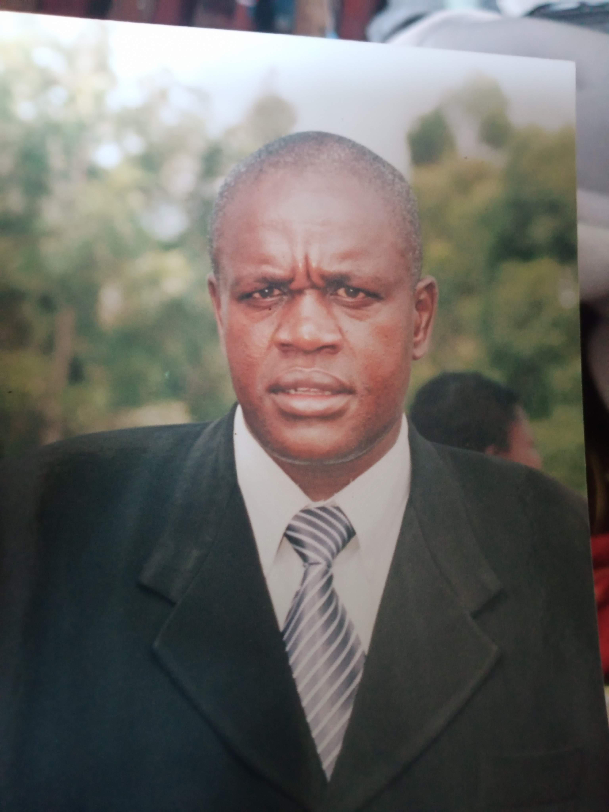

Celebrating the life of
MR. James Nyaamba Siocha
A tribute Website memorial for my Dad
Early Life
The late Mr James Nyaamba Siocha was born in 1970 at Nyabione village, Bokeira location to Mzee Andrew Nyaamba Nyabichuri and Mama Clemencia Basweti Moturi.
He was a member of Nyamusi Central S.D.A Church
Education
The late James Siocha started his formal Education at Nyamusi Primary school (1978-1975). and then procedeed to Nyansiongo Boys High School between 1986 and 1989 when he did his KCSE. He then procedeed to Kericho TTC (1990-1992) for his primary school teacher training course after which he worked at the following primary schools; Keng'uso, Nyakaranga, Nyamatuta, Ong'era and Giosoya. He later joined Kampala University for his undergraduate degree in Education, graduating in 2013. Aside from teaching the deceased was appointed area chief, Bokeira location, in 2003, where he worked until the year 2014 when he was promoted to the position of Assistant County Commissioner. He was subsequently posted to Masogo in Muhoroni sub-county then Pap Onditi in Nyakach then Siaya Sub-county and finally Ekerenyo in Nyamira North Sub-county.
Illness
Mr Siocha felt ill on April 2021 and was taken to Oasis Hospital in Kisii by his Wife Janet and he was diagnosed of
Hypertension. He was treated and allowed to return home. He has been fine ever since until he collapsed at his home
in Nyamusi. He was rushed to Nyamira General Hospital where he was pronounced dead on arrival on
2oth September, 2021.
We celebrate the life he lived, the impact he made and the lessons he left on both family and friends.
Tributes
Tribute from his wife Janet Moraa
Life has had varying chances for us. We've seen highs and lows together. We've grown from one stage to another together. We've known happiness and sorrow together. Above all, we've raised two wonderful sons together, sons who have learnt to appreciate the importance of founding and raising a family through observing our actions and inactions, the two vital sources of knowledge and wisdom. Your presence in our lives as a family was a blessing, a source of security and pride. Your demise leaves a gaping hole that will never be filled! Go thee well till we meet again on that beautiful shore in that land that's brighter than day!
Tribute from sons
Peter
Daddy,
I am eternally grateful for the life you gave us.
You've brought us up to this stage where, unfortunately, you've left before seeing us graduate to the next level where you'll gleefully guide us bring up your grandchildren.
I've seen you and mummy work hard to raise us. I've seen you push us to achieve our goals in life, admonishing us that nobody else can do it for us but we ourselves alone!
It's that urging that will echo in our minds forever as we celebrate the life we lived when you were here! I promise to support mum, always, in our attempt to protect and take care of her.
We are proud of you daddy, rest in eternal peace daddy, amen!
Rawlings
It's sad to know that my dad left us exactly on Monday 20th September, 2021, but again it is a loving memory for me when I think about the life of my dad & all he did for me in the short time we spent together. The good memories remain with me forever, knowing the ability impacted by my dad into my life. All the good things that he taught me. An intelligent and intellectual man full of jokes, always stresses the importance of education and hard work in life to become a great person... Daddy, my heart bleeds each time I remember that you are gone, but your loving & caring fatherly role will continue lingering in my humble heart. This death won't separate us as I would soon grow old and exit just like you did and we meet again soon to continue as father and son. If we have forgotten to show our gratitude enough for all the things you did, we're thanking you now. And we are hoping you knew all along, how much you meant to us. Farewell Dad. We love you!
PICTORIAL MEMORIES


ECCLESIASTES 3:1
Everything that happens in this world happens at the time God chooses